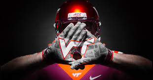

Go Hokies
I have attended Virginia Tech, on and off, since 1993. I graduated with a degree in Communication Studies in 2019. The Virginia Tech Hokies football team has been part of my life since I arrived here in Blacksburg. The Hokies, under Head Coach Frank Beamer have one of the NCAA's longest bowl streaks, which started in 1993 with a trip to the Independence Bowl in Shreveport, Louisiana.
Led by Michael VIck, the Virginia Tech Hokies reached the NCAA National Championship game in 1999. The Sugar Bowl in New Orleans, Louisiana, was the site of the Hokies 46-29 loss to the Florida State Seminoles. Despite the loss the Hokies made strides towards the upper echelon of college football. The game was also known for throwing Michael Vick, Virginia Tech's quarterback in the college football limelight, leading to him being the first pick in the NFL draft two years later by the Atlanta Falcons.
Over the years the Hokies have continued a culture of winning and have earned a bowl bid in every season since 1993. The Hokies have become the team to beat in the state of Virginia.
Hokies #1 Picks
- Bruce Smith (1985)
- Michael Vick (2001)